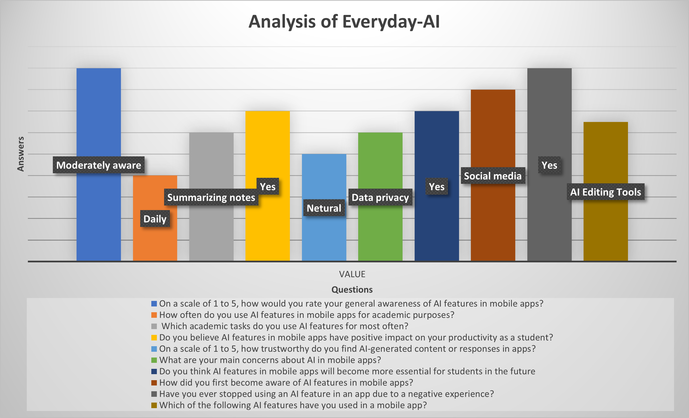

Empirical Study on Awareness and Use of AI in Everyday Applications
Everyday AI is a digital literacy program that helps people understand how Artificial Intelligence is used in daily life.
It explains AI applications in smartphones, social media, online shopping, navigation systems, voice assistants, and other digital services that people use regularly.
The program focuses on building awareness about how AI works behind the scenes and how it influences decisions, recommendations, and user experiences.
It also emphasizes safe, ethical, and responsible use of AI, including understanding data privacy, algorithmic bias, and informed digital behavior.
The goal of Everyday AI is to help learners become confident, responsible, and informed users of everyday technology.
Participants regularly use AI-powered applications such as Google Maps, YouTube, and voice assistants.
Only one-third of respondents understand basic AI decision-making concepts.
Users expressed uncertainty about how personal data is collected and used by AI systems.
Respondents showed strong interest in learning AI basics through awareness programs.

Figure 1: Analysis based on Google Form responses (n = 25 participants).